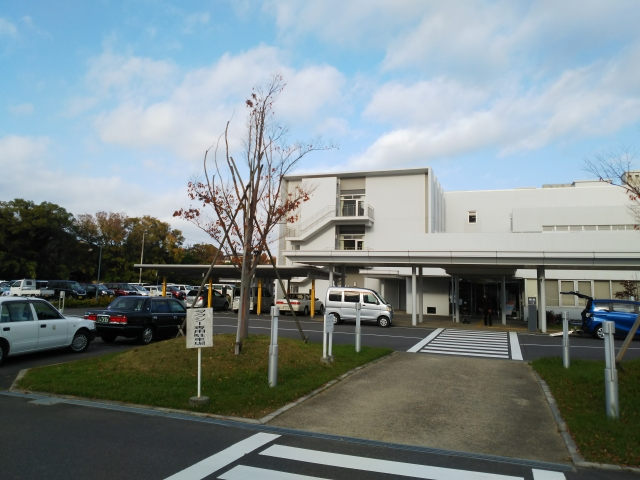
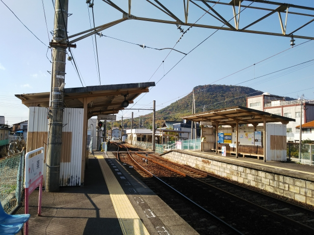
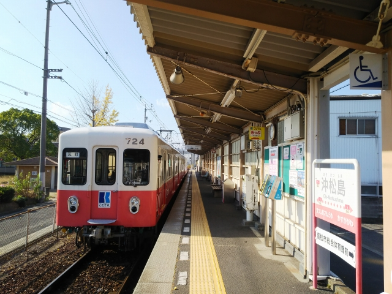
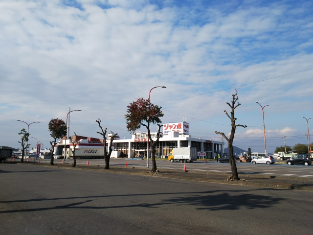
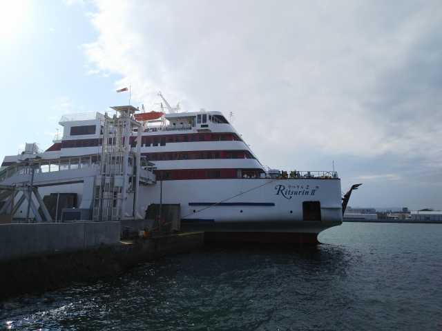
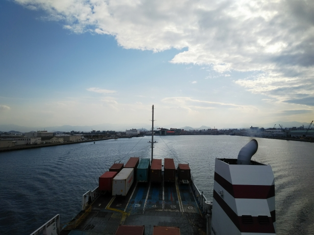
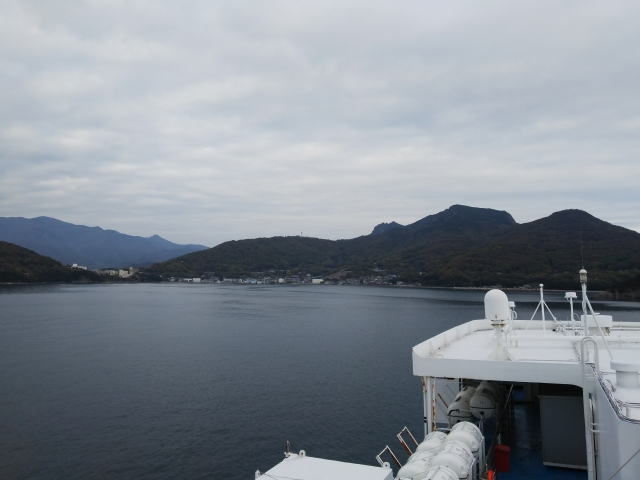
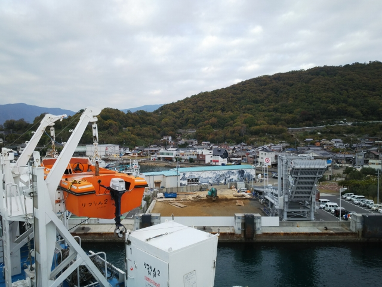
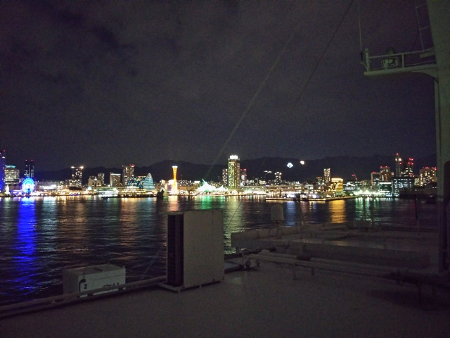
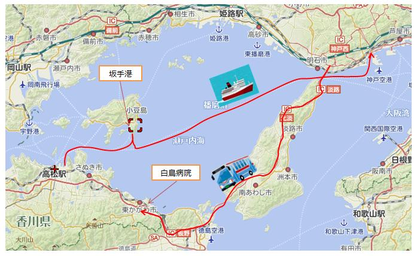

2020（R2）年11月27日 高松出張 まよい旅②
顧客先の仕事が順調に終わったので、久々に懐かしのジャンボフェリーに乗って帰ってきました。

香川県の徳島寄りにあるユーザの県立白鳥病院です。
福岡の人には懐かしいかも・・・

仕事を片付けて、最寄の讃岐白鳥駅からＪＲに乗って
古高松南駅まで向かい、そこから歩いて琴電志度線の
八栗駅に向かいました。

沖松島駅。高松東港の最寄駅です。
車両は元名古屋地下鉄。なんかダサい・・・。

途中でうどんをかきこんで、フェリー乗り場到着。

頭でっかちの独特のフォルムは変わってないなぁ。
子どもがベビーカーに乗ってた頃に乗った以来や。

高松東港出航。

途中、小豆島に寄港します。

坂手港。

神戸に着くころには日が暮れて、夜景がきれいに見えるわ。
思えば、中２の時に初めて一人旅をした時のスタートが、今
はなき青木港から高松東港行のフェリーでした。以来３５年
以上たつけど、いまだに同じようなことしてるんよなぁ
